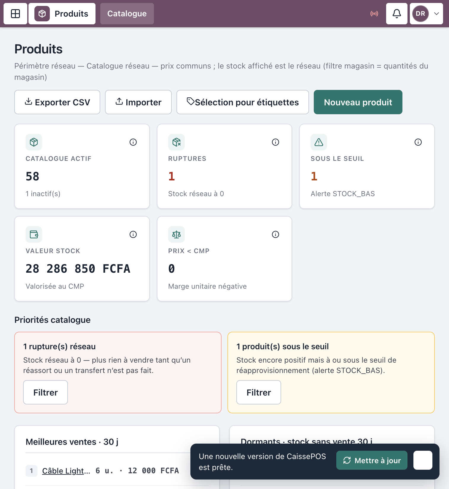
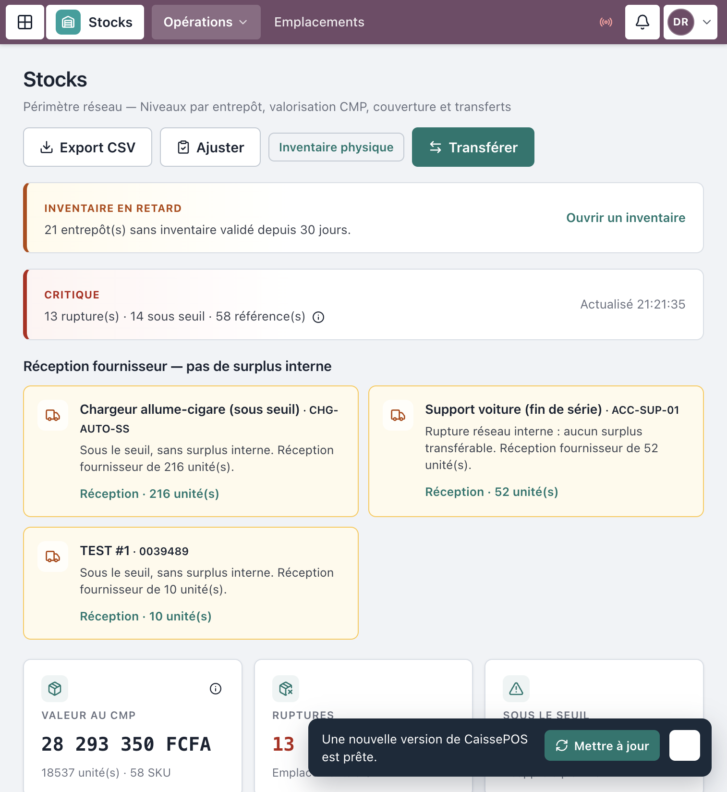
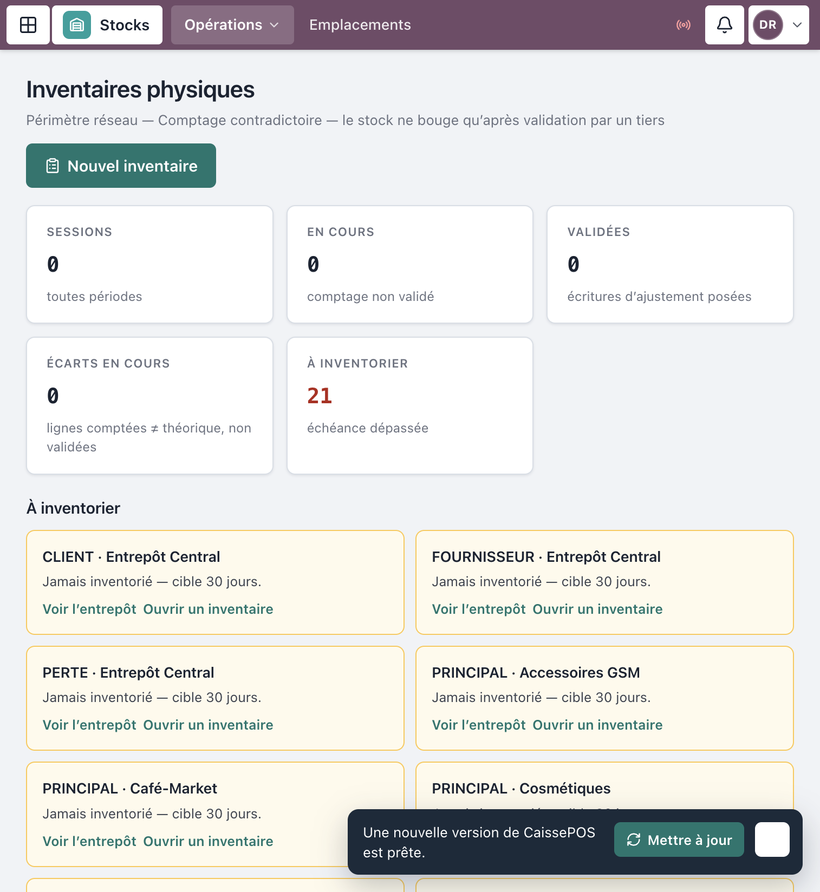
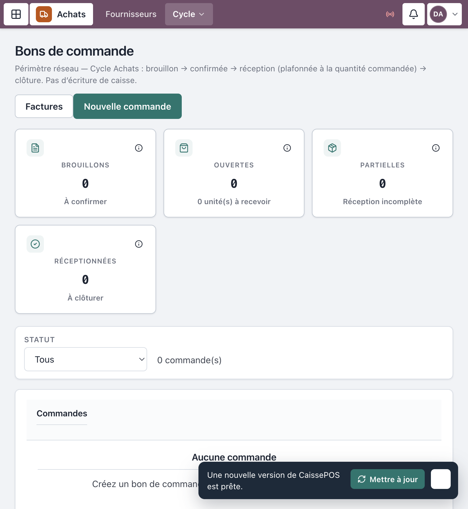

Progiciel Caisses & CRM — MAJOR AUTO PARTS
Public : Achats, Logistique,
Qualité / Stocks, RAF, Resp.
SI / boutique (selon étapes)
Périmètre : catalogue, stocks, inventaires, fournisseurs, commandes,
réceptions, factures fournisseur
Captures réelles depuis l’application en production (
crm.majorautoparts.shop). Les libellés correspondent exactement à l’interface.
Le circuit P2P sépare volontairement les rôles :
| Étape | Qui |
|---|---|
| Demande / commande | Achats (± boutique) |
| Approbation | DAF / Direction |
| Réception quantitative | Logistique |
| Qualité / mise en stock | Qualité / Stocks |
| Facture / matching | RAF / Comptable |
| Paiement | Trésorerie / DAF (hors POS) |
Une même personne ne doit pas enchaîner toutes les validations (contrôle interne).
https://crm.majorautoparts.shop avec
le compte du métier (Achats, Logistique, Qualité…).
Figure 1 — Connexion
Menu Produits (/produits).
/produits/:id pour le détail.
Figure 2 — Catalogue produits
Menu Opérations → Stocks
(/stocks).
Actions fréquentes :
/stocks/operations) :
Nouveau bon → Créer le brouillon
Figure 3 — Stocks
Menu Opérations → Inventaires
physiques (/inventaires).
Le compteur et le validateur ne doivent pas être la même personne (règle UI « tiers »).

Figure 4 — Inventaire physique
Menu Fournisseurs (/fournisseurs) →
Nouveau fournisseur → Créer.
Sur la fiche : Créer un bon de commande, Enregistrer une réception, Enregistrer un paiement (selon droits).
| Écran | Route |
|---|---|
| Planning & sourcing | /achats/planning — Nouvelle demande,
Soumettre, Approuver |
| Bons de commande | /achats/commandes — Nouvelle
commande |
Sur un bon (/achats/commandes/:id) :
Soumettre → Approuver →
Confirmer → Réceptionner →
Clôturer / Répartir vers
boutiques.

Figure 5 — Commandes d’achat
Menu Cycle → Réceptions &
qualité (/achats/receptions).
Figure 6 — Réceptions & qualité
Menu Cycle → Factures &
matching (/achats/factures).
| Action | Achats | Logistique | Qualité | RAF | DAF/DG |
|---|---|---|---|---|---|
| Créer commande | Oui | — | — | — | Lecture / approbation |
| Approuver | — | — | — | — | Oui |
| Réception quantitative | — | Oui | — | — | — |
| Décision qualité / stock | — | — | Oui | — | — |
| Facture brouillon | — | — | — | Oui | — |
| Symptôme | Que faire |
|---|---|
| Pas de bouton Approuver | Compte Achats ≠ DAF/DG |
| Impossible de Mettre en stock | Étape qualité non faite ou mauvais rôle |
| Inventaire non validable | Même utilisateur que le compteur — faire valider par un tiers |
| Produit absent du POS | Vérifier actif + stock boutique / emplacement |
Mot de passe seed : MotDePasse!123
| Identifiant | Rôle |
|---|---|
demo-achats |
Responsable achats |
demo-logistique |
Logistique / Transit |
demo-qualite |
Qualité / Stocks |
demo-raf |
RAF / Comptable |
demo-respsi |
Catalogue / structure |
demo-daf |
Approbations |
Document couvrant stocks, inventaires et cycle achats
P2P.
MAJOR AUTO PARTS · CaissePOS